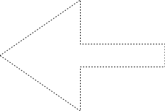
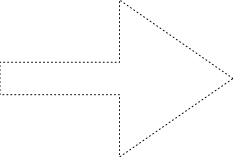

| Name | Primary Inventor | Year | |
|---|---|---|---|
| A | Ascii Art | Kenneth Knowlton | 1966 |
| B | Boids | Craig Reynolds | 1986 |
| C | Cellular Automaton (Wolfram Code) | Stephen Wolfram | 1983 |
| D | Differential Growth | Andy Lomas | 2014 |
| E | Error Diffusion (Floyd-Steinberg) | Robert W. Floyd and Louis Steinberg | 1976 |
| F | Fourier Transform | Joseph Fourier | 1807 |
| G | Game of Life | John Conway | 1970 |
| H | Hilbert Curve | David Hilbert | 1891 |
| I | Invert kinematics | Michael Girard and Anthony Maciejewski | 1985 |
| J | Jarvis March (Convex Hull) | R. A. Jarvis | 1973 |
| K | K-d Tree | Jon Louis Bentley | 1975 |
| L | L-system | Aristid Lindenmayer | 1968 |
| M | Maze Generation (Recursive Backtracker) | Charles Pierre Trémaux | 1882 |
| N | Navier-Stokes Equations | Claude-Louis Navier and George Gabriel Stokes | 1845 |
| O | Opentypejs | Frederik De Bleser | 2014 |
| P | Perlin Noise | Ken Perlin | 1982 |
| Q | Quadtree | Raphael Finkel and J.L. Bentley | 1974 |
| R | Reaction Diffusion (Gray-Scott Model) | Peter Gray and Stephen K. Scott | 1984 |
| S | Sprirograph | Denys Fisher | 1960 |
| T | Ten Print (10 Print) | Unknown | 1982 |
| U | Unsharp Mask | Unknown | 1930s |
| V | Verlet Integration | Loup Verlet | 1967 |
| W | Wave Equation | Jean le Rond d'Alembert | 1747 |
| X | XOR Blending | Thomas Porter and Tom Duff | 1982 |
| Y | YUV Color Space | Walter Bruch | 1960s |
| Z | Z-fighting | Unknown | 1980s |